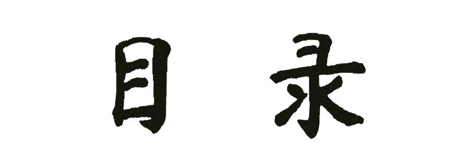
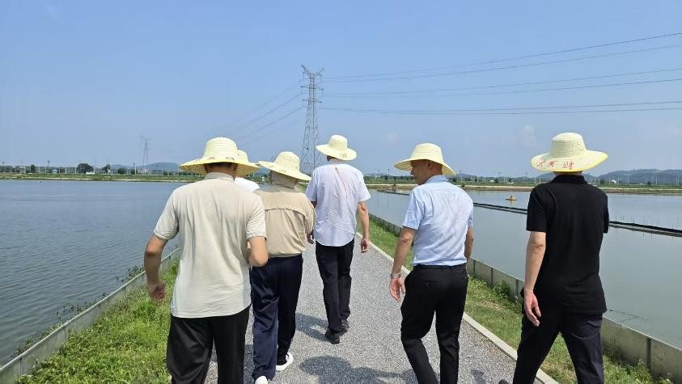
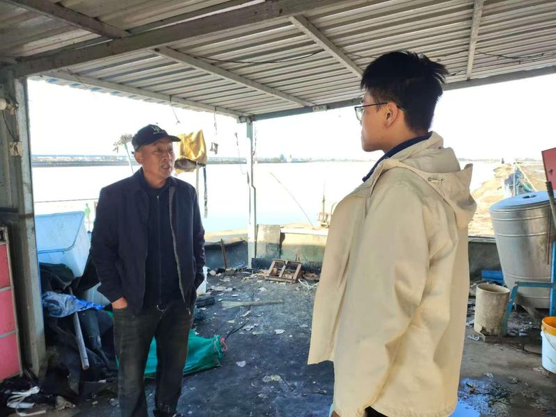
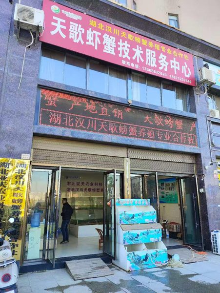
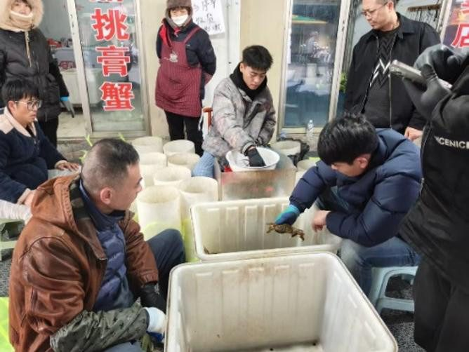
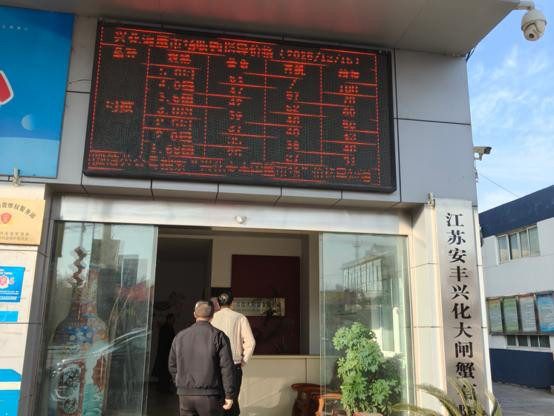
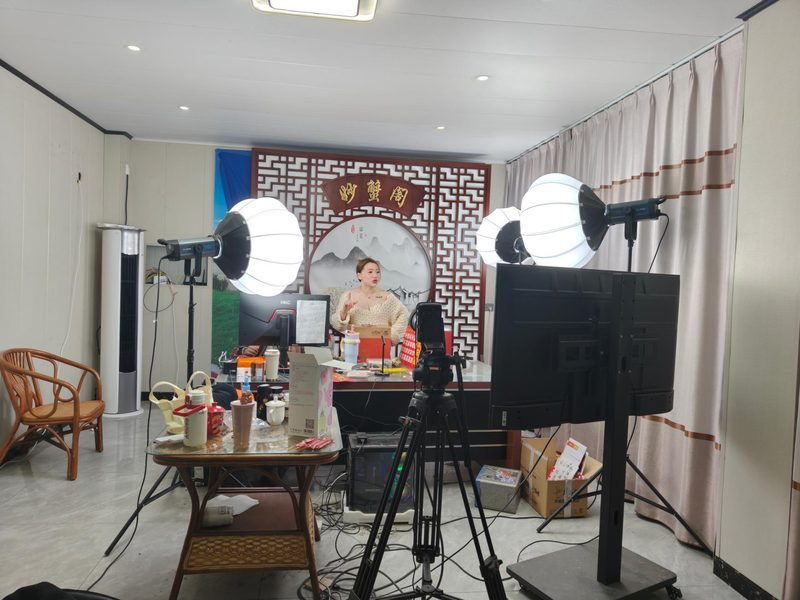
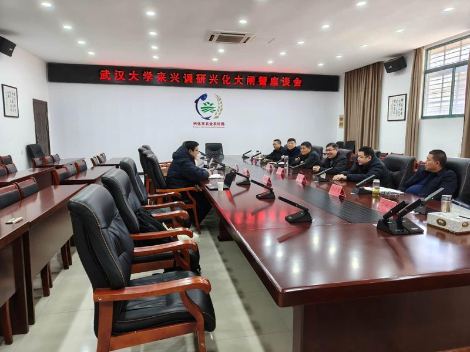
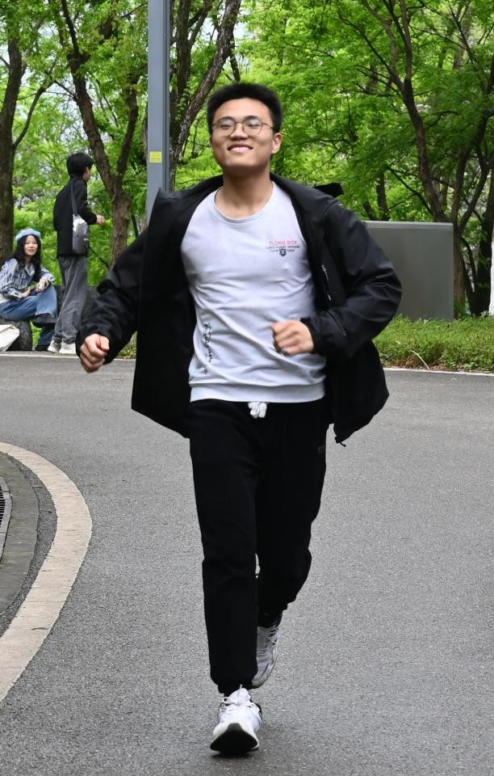

调研长卷

池塘养殖走进水产生产现场

养殖户访谈学习一线经验

专业合作社调研品牌养殖特色

经营访谈在兴化，挑蟹、绑蟹已经是专门的活

交易中心蟹按等级报价，客商都往这儿来

直播现场学习直播电商传播

产业座谈学习发展情况
战略分析
汉川：缺的不是分级，是市场认的品牌
湖北河蟹产量大，好蟹却常被运到兴化、阳澄湖，换个牌子再卖。汉川也分级，可分出来的好蟹，市场不认那个价。所以方案让“汉川河蟹”铺开，再立一块“汈汊湖满膏蟹”的高端招牌。这项品牌设计获汉川市委市政府采纳；2026年9月，已有企业把新的品牌说法印上包装。
在导师指导下累计参与8个项目，作为学生负责人主导5个，覆盖京山桥米、汉川河蟹、江夏鳜、松滋鸡等，项目平均执行周期为3个月，为湖北有关市县政府提供区域公用品牌发展的科学规划方案与决策参考。
- 1
调研
带领团队累计实地调研160+天，走访五常、兴化、高淳等产区及交易中心，进入80余个生产场景、140余家企业和单位，覆盖14个省或直辖市、23个城市。
- 2
分析
结合资料与数据库检索、SPSS问卷分析及消费者访谈，开展宏观行业分析、行业竞争分析，梳理本地现状并分析优劣势，提炼关键趋势。
- 3
设计
提出品牌未来发展方向和面向消费者的价值表达，形成涵盖政府、企业和协会的顶层设计方案与实施建议。
- 4
结果
与团队累计产出6000余页PPT，本学年按“1+4+1”体系交付4份咨询主报告、25份专题报告；课题组成果在3次市委理论学习中心组（扩大）学习会上汇报，相关产业与企业实践获新华社等11篇媒体报道。“1+4+1”是一份总方案，四份分头落地的细案（交易中心、电商、产地场景、渠道），再加一份给市委市政府的结题汇报。
另：良品铺子战略委员会管理咨询项目（2024.10–2025.04），在导师指导下围绕供应链与通路开展4项专项研究，比较10余个竞品案例，提出原产地直采及定位建议。
HR
- 1
需求
对接京沪深云业务售前架构师、大客户销售、生态拓展、渠道拓展等5个招聘方向，先把业务要什么人问清楚，再打磨JD。
- 2
筛选
完成简历筛选、电话初筛及面试协调，形成候选人去重、新增标记与A/B/C分档清单。
- 3
跟踪
使用Excel跨表匹配、条件汇总及数据透视表支持候选人跟踪与渠道复盘。
此前在蔚来汽车（重庆）做HR实习生（2023.11–2024.03），支持实习生和部分正式员工招聘。接手时简历有积压，半个月清完，之后新简历当天看完；还访谈了区域销冠兼店长，把销售行为线索写成情境问题。
AI应用
考核出题工具腾讯
前后用了100多次，给200多名销售培训生的转正考核出过107道题。起因是固定题怕被摸熟，随口问又太散，所以做了明暗题卡：学生看到行业背景和任务；面试官还能看到客户的隐藏条件和追问提示，比如客户刚出过安全事件，看学生会不会主动问。规则我定，代码主要让AI写。第一版权限一刀切，我和同事试用后都觉得不好调，就拆成了项目组、面试官、学生三种。
招聘工作台原型腾讯
JD一改，之前的匹配结论就难回查。和AI一起做了个工作台，把JD版本、匹配依据和沟通纪要连在一起，自己日常招聘在用。
Incremind · 积微2026.06至今
跟AI合作，每开一个新对话都要从头讲背景。积微替AI记住已经确认的资料，后面只补新的；每条资料都能查到从哪来。拿48道新题实测，一次修复把证据召回从2%提到66%，完全正确从1题到22题；代价是中位耗时从16秒变成92秒，下一步做“够用即答”。设计时读了谷歌的Titans论文，定下“只记增量”的原则；工作台、资料库、设置三个模块是和AI一起做的，自己日常在用。
brand-strategy-analysis2026.09至今
我们调研过五常大米、阳澄湖大闸蟹等十几个有名的区域品牌，攒下一套做法。我把它写成AI能照着跑的流程：每一步要什么材料、做什么、交出什么、怎么检查，都写清楚了。想让没做过品牌研究的人，也能跟着走一遍。
演示：考核题卡 其他个人作品：案例集、Chriptmas OS、见见面、回响世界
